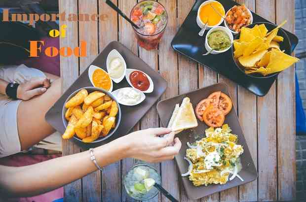
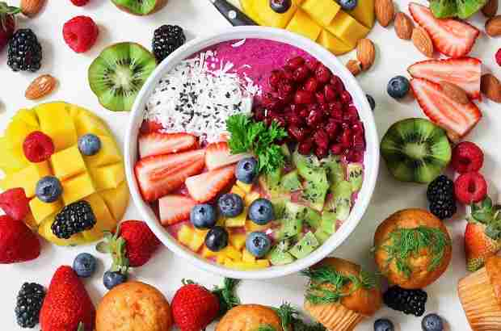

The importance of food is obvious and essential. Healthy food provides us the nutrients and energy to develop and grow,be active and healthy, to move, play, work, think and learn.Foods are directly related to our body and mental and social health because each food or liquid contains particular nutrition such as carbohydrates, protein, vitamins, minerals, fats, etc, which are very necessary for our physical and mental growth.Food and water are the main sources of nutrition and strengthening the body, but many of the foods we eat do not have any nutritional values.On the contrary, they lead to health problems such as diabetes and heart disease. Therefore, you should choose healthy and balanced foods that can provide enough nutritional value for the body.
Food is the third most important thing for living beings to provide energy and development, maintain life, or stimulate growth after air and water. In fact, it is one of the most complicated sets of chemicals.Food plays an important role in the promotion of health and disease prevention. In general, it consists of essential nutrients, such as carbohydrates, proteins, fats, minerals and vitamins which are consumed to provide nutritional support for an organism and ingested by an organism and assimilated by the organism's cells to sustain health. These nutritious foods are in the form of grains, pulses, fruits, vegetables, oils, etc.
We must know that the terms 'food' and 'nutrition' are sometimes used synonymously, which is not correct completely.Food is a composite mixture of various ingredients that are consumed for nutrition.On the other hand, nutrition connotes a dynamic process in which swallowed food is utilized by the human body for nourishment. As much as we eat, our body gets nourished. When there is an insufficient intake of protein, energy or carbohydrate, there is often illness or infection.
Foods are secured through several methods: agriculture, hunting, gathering, etc. The detailed statement is that most food has its origin in plants.Some food is derived directly from plants, but even animals are also used as food sources that are picked up by feeding food from plants. Some foods are not directly obtained from animal or plant sources they are obtained from various edible fungi,especially mushrooms. Fungi and ambient bacteria are used in the preparation of fermented and pickled foods likeleavened bread, alcoholic drinks, cheese, pickles, etc.Another example is blue-green algae such as Spirulina.Inorganic substances such as baking soda, salt, and tartar cream are used to preserve or chemically convert a component.
